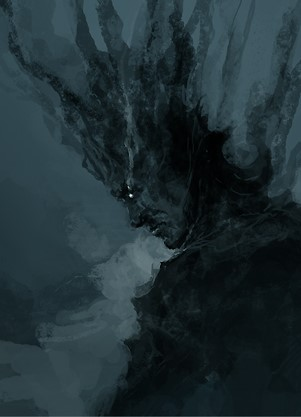

Therakir is a refugee from the Forlorn empire of Dawn, a realm of strife and brutality,
where a single mistake costs the life of the mistaken and the ones following them.
His escape heralded change in the world, as a strange power that Therakir carried forth, broke the established order,
with arrival into Kazzruks Realm.
Now this wrech roams the realm alongside the party, seeking peace, ever outside of his reach.
Powers
1) Ethereal Curator
Powers innate to Therakir and his future self. Rumored to have been granted by the Infinite one,
they give the user reign over souls. The souls subjugated through
the force of wielders carry on knowledge and power to be used as a weapon. The souls master's command is law, his will is order.
2) Chorus of the Dead
A monstrous song of undeath carrying itself like a virus throughout the realms. Infected creatures are
stuck between life and death
in a state of blissful symphony. As the music creeps deeper and deeper into ones soul, it severs ones tether to mortality
even further, washing over the self in a wave of oblivion, until there is nothing but rythmic humming left,
where once was a person.
Age: 17; Height: 173 cm; Weight: 78 kg (including wings). Str: 7 Dex: 20 Con: 15 Int: 10 Wis: 12 Cha: 18